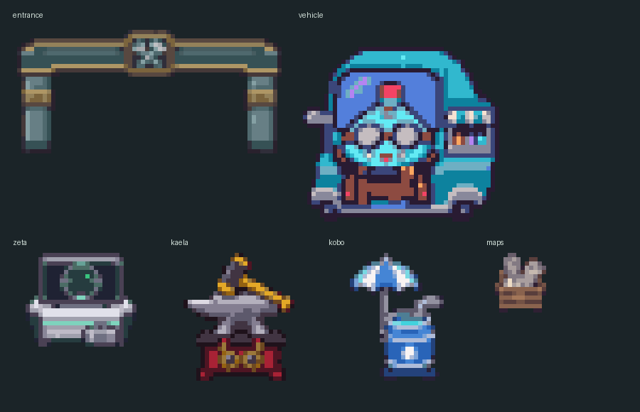

HOLOCRAWL · 고정지형 초안183
h3ro 비클 · holoh3ro
고글 달린 파란 캔디 판매차와 지도 상자를 보급 차량으로 재해석했습니다. 넓은 차고 입구와 제타의 정보 단말, 카엘라의 모루, 코보의 빗물 설비를 둔 비정형 정비 마당입니다.
도트 준비 중…
벽에 붙인 배치 · 뒤쪽 던전 벽과 연결독립 배치 · 사방 최소2칸 통로
제타 · 정보 단말카엘라 · 모루와 망치코보 · 빗물 설비
고유 도트 확대 보기

32px 타일 · 그림을 누르면2배 정수 배율로 확대됩니다. 브라우저 도트·배치 검토본이며 전투와 보상은 후속 작업입니다.
원작 시설 목록 · 직전 토코호로로 확정본 · 배치 검사